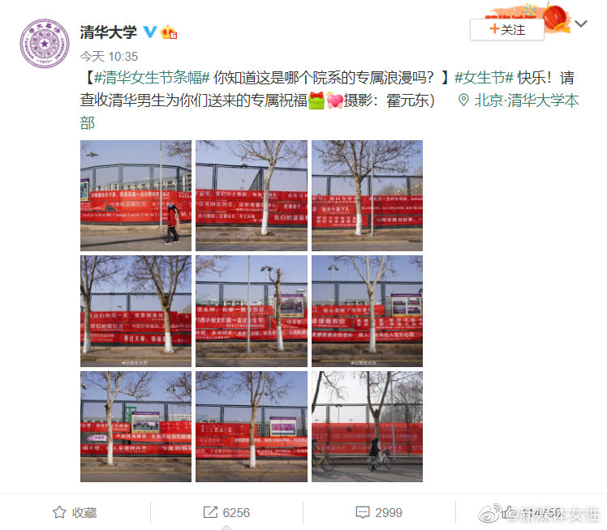
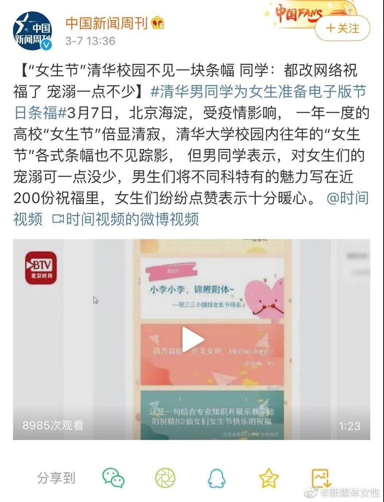
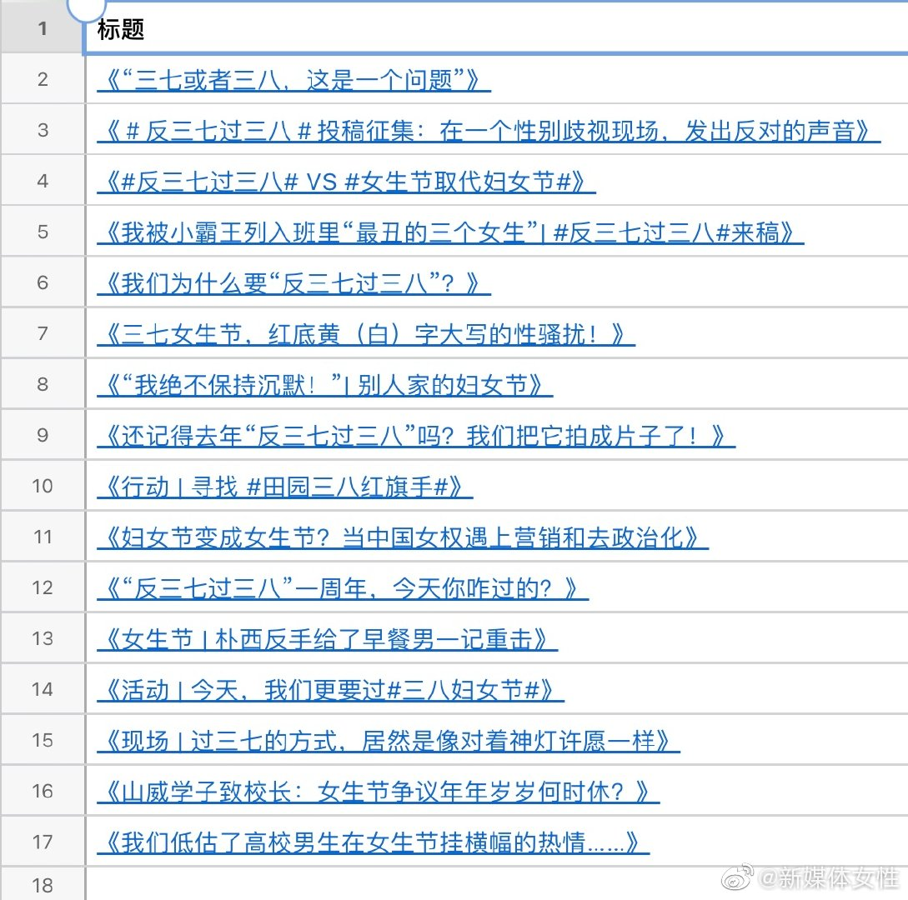

哈里王子好样的，与封建家庭决裂！

斯图亚特9
2021-03-07
斯图亚特9
2021-03-07
发现上goodreads上看朋友们都看什么商业或者成功学的书，然后去GetAbstract上找找有没有概述看一看，这事情不错。以后大家聊天聊成功学的时候，搞不好我也能插两句了呢。
斯图亚特9
2021-03-07
女权人士年年反女生节收效不高。今年粉红大V们都发言挺三八妇女节了，怎么清华还敢搞女生节？
@新媒体女性:
#清华女生节条幅# 每年针对女生节横幅的批评声浪不少，总有评论不冷不热的问到：“何必这么上纲上线？”
但事实是，“女生们”早在5年前就明确表态过要 #反三七过三八# ：相比起流于形式的异性恋式示好表演，我们更想要性别友好的校园环境、就业平等、出行安全......一切免受性别歧视和暴力的生活。
媒体人@李思磐 曾尖锐地指出“女生节”的荒谬之处：“它让意淫和消费假关爱之名成为传统与惯例，强化了男保护女娇柔的性别成见，不仅无法改变对女性的歧视与隔离，并且用糖衣包裹它最难下咽的部分。”
他们真的听不到我们的声音吗？也许他们听到了，但他们不在乎。
去年由于疫情影响，女生节的横幅宣传相对少了很多，但清华学生会依旧“一往情深”（执念颇深），坚持要把女生节横幅做成电子版。今年横幅可以出街了，一切又卷土重来。
受朋克女孩烧横幅的启发，清华学子们不妨自行举办“我最讨厌的女生节横幅”大赛，邀请全校女生手持剪刀匿名为各院横幅进行投票，剪得最破烂的，拜托下一年有点自知之明别再搞了。
关于 #反三七过三八# ，如果你想了解更多，这里有一份新媒体女性旧文合集（石墨文档）： 网页链接
网页链接
但事实是，“女生们”早在5年前就明确表态过要 #反三七过三八# ：相比起流于形式的异性恋式示好表演，我们更想要性别友好的校园环境、就业平等、出行安全......一切免受性别歧视和暴力的生活。
媒体人@李思磐 曾尖锐地指出“女生节”的荒谬之处：“它让意淫和消费假关爱之名成为传统与惯例，强化了男保护女娇柔的性别成见，不仅无法改变对女性的歧视与隔离，并且用糖衣包裹它最难下咽的部分。”
他们真的听不到我们的声音吗？也许他们听到了，但他们不在乎。
去年由于疫情影响，女生节的横幅宣传相对少了很多，但清华学生会依旧“一往情深”（执念颇深），坚持要把女生节横幅做成电子版。今年横幅可以出街了，一切又卷土重来。
受朋克女孩烧横幅的启发，清华学子们不妨自行举办“我最讨厌的女生节横幅”大赛，邀请全校女生手持剪刀匿名为各院横幅进行投票，剪得最破烂的，拜托下一年有点自知之明别再搞了。
关于 #反三七过三八# ，如果你想了解更多，这里有一份新媒体女性旧文合集（石墨文档）：
- 
- 
- 